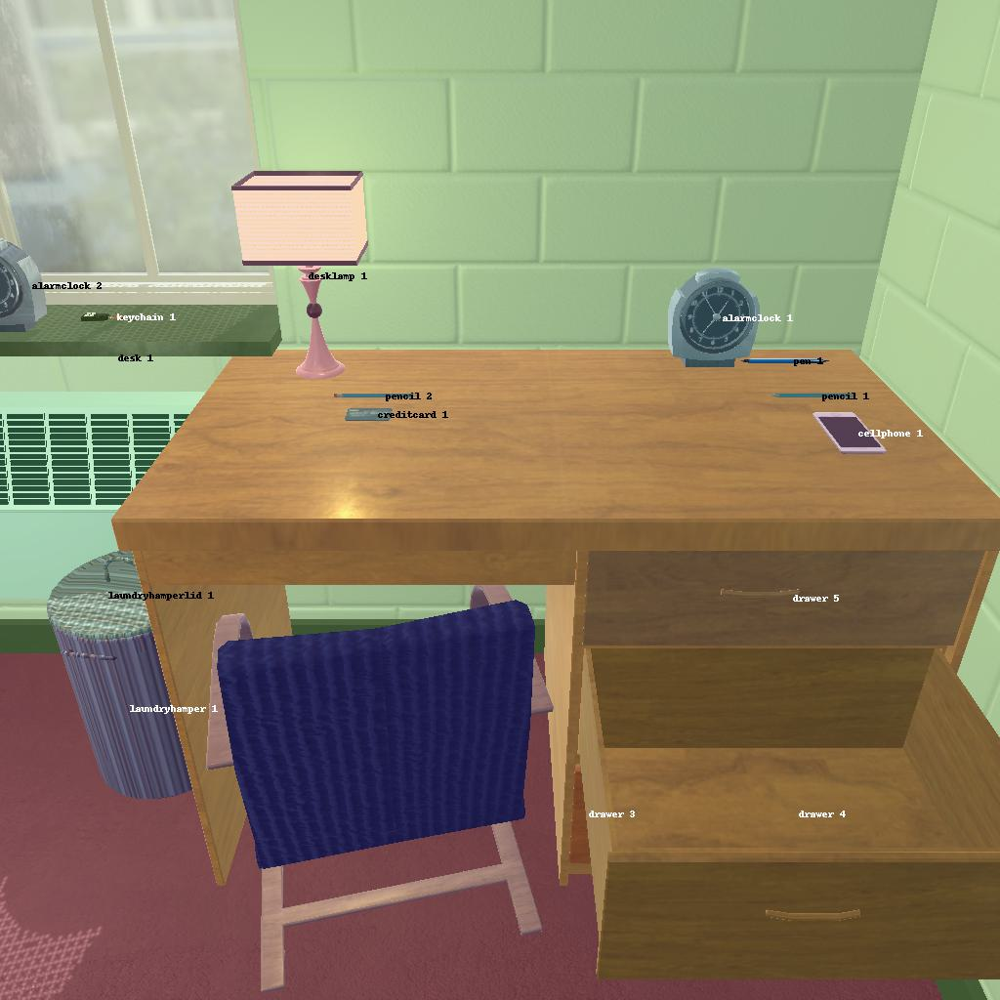

---------------------------------------------------------task: 8---------------------------------------------------------
--------------------------------------------------------------------------------------------------------------------------------------------------------------------
--------------------------------------------------------------------------------------------------------------------------------------------------------------------
Step:--------------------------------------------------------------------------8-------------------------------------------------------------------------------
----------------------------------------
VLM Prompt:
Image1:
Image2:
**Instruction**
1. Analyze the provided image to identify all visible household objects, focusing on those relevant to the task description "put some laptop on desk."
2. Use the analysis of the image and the task hint "The agent must find an object of the desired type, pick it up, find the correct location to place it, and put it down there." to answer the question: what is the most reasonable action in the choices for the task description "put some laptop on desk"?
4. Decide and write the answer using the template: The answer is: (i): , where i is the real number. If there is no desired object in the image, search every place based on **Initial Observation** to find the object. And if no one is exactly correct, choose a similar answer.
**Initial Observation**
You are in the middle of a room. Looking quickly around you, you can see bed (1), garbagecan (1), desk (1), sidetable (1), drawer (1-5), laundryhamper (1)
**Answer Choices**
(1): go to bed 1
(2): go to garbagecan 1
(3): go to desk 1
(4): go to sidetable 1
(5): go to drawer 1
(6): go to drawer 2
(7): go to laundryhamper 1
(8): go to drawer 4
(9): go to drawer 5
(10): open drawer 3
(11): close drawer 3
(12): examine drawer 3
**Answer**
Let's think step by step by following the instructions.
----------------------------------------
----------------------------------------
Original Response:
Firstly, we need to identify all visible household objects relevant to the task description "put some laptop on desk." In the image, we can see a desk with various items on it, such as a lamp, pencils, and an alarm clock, but no laptop is visible on the desk or in the immediate vicinity.
Based on the Initial Observation, we know there is a bed, garbage can, desk, side table, drawers, and a laundry hamper in the room. Since the task is to put a laptop on the desk and no laptop is visible, we must search for it. The most likely places to find a laptop would be in the drawers.
Therefore, the most reasonable action from the provided choices would be to search the drawers for a laptop. Since we cannot see inside the drawers from the image, we should start by examining or opening the drawers.
The answer is: (10): open drawer 3.
----------------------------------------
----------------------------------------
>>> Refine Original VLM Response and Get Pure Action: open drawer 3
----------------------------------------
-----------------------------------------------------------------
Running time: 14.199059009552002 seconds
Total Money: 3.421769999999998
-----------------------------------------------------------------
-----------------------------------------------------------------
Text Observation:You open the drawer 3. The drawer 3 is open. In it, you see a desklamp 1, a alarmclock 1, a laundryhamperlid 1, a alarmclock 2, a cellphone 1, a creditcard 1, a pen 1, a pencil 1, a pencil 2, and a keychain 1.
-----------------------------------------------------------------
UNSUCCEED